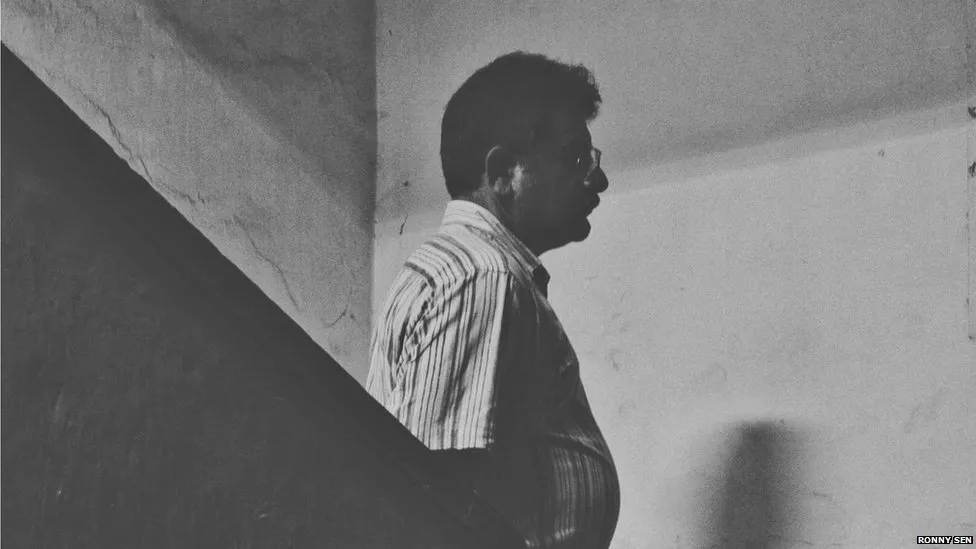

Our Recovery Stories
Our substance abuse counseling program has been instrumental in transforming the lives of individuals struggling with addiction. Through our compassionate and personalized approach, we have witnessed remarkable progress and success stories among our clients. Many individuals who once felt overwhelmed by their addiction have found hope and healing through our supportive environment and evidence-based interventions. Our dedicated team of counselors and therapists work tirelessly to address the root causes of addiction, provide coping strategies, and empower individuals to make positive changes in their lives. As a result, we have seen countless individuals achieve sobriety, rebuild relationships, and reclaim their sense of purpose and joy. We are immensely proud of the progress our clients have made, and we remain committed to supporting anyone on their journey to recovery. If you or someone you know is struggling with addiction, we encourage you to reach out and take the first step towards a brighter future with our counseling program.
Clean seven years: It took 30 treatments for Anindya C to finally quit drugs. A film actor, he is now an ambassador for a Kolkata police programme against drug abuse and illicit trafficking

Clean one month: Arijit N is one of Kolkata's oldest addicts, and has been using drugs for the last 33 years. He says that when he was first exposed to brown sugar (an adulterated form of heroin) people would openly smoke it at cafés in the city. He stays with his mother now. "Whenever she is away she puts me in a treatment centre. She never leaves me alone in the house".
Clean two years: Otillia started using drugs at 16 in school. She says, "After my father died I became extremely lonely and depressed. Drugs helped me back then. I did anything and everything to continue using drugs." She wants to finish her education now.
Recovery Stories
Recovery stories from substance abuse are like a beacon of hope, illuminating the path towards healing and redemption. These narratives are filled with raw honesty, vulnerability, and the indomitable human spirit. They invite us into the deeply personal journeys of individuals who have faced the darkness of addiction and emerged into the light of recovery. Each story is a testament to the power of resilience, courage, and the unwavering determination to reclaim one's life. Through shared experiences of struggle, transformation, and triumph, these stories remind us that no matter how dire the circumstances may seem, there is always a chance for renewal and a brighter tomorrow. They invite us to witness the profound beauty of human vulnerability and the profound strength found in the journey towards sobriety.
Clean two years: Otillia started using drugs at 16 in school. She says, "After my father died I became extremely lonely and depressed. Drugs helped me back then. I did anything and everything to continue using drugs." She wants to finish her education now.
Clean 23 years: One of Kolkata's oldest recovering addicts, Deep M says, "There was a time I had given up all hope. My mother once tried to commit suicide due to my usage and she was admitted to the same hospital I had been entered into for treatment. I never thought I would live this long."
Clean one month: Alia Zafar started using drugs at the age of 16 and has been to rehabilitation three times. She has been trying to quit since 2005. "I couldn't stop using drugs because of my big fat denial". Ms Zafar is determined to stay clean this time. She feels that in India, it's harder for women to kick the habit because there are very few women's treatment centres and people are reluctant to accept them in the mainstream even after they have quit.
Clean nine years: Tirthankar S, a former student of the academy of fine arts in Kolkata, is standing near the toilet of a local market, a place he would often go to hide and use drugs.

Clean 16 years: Kanishka M remembers his early days in recovery when his father refused to fund his treatment. It was his wife who mortgaged her gold jewellery and arranged money for his treatment. There was no looking back after that.